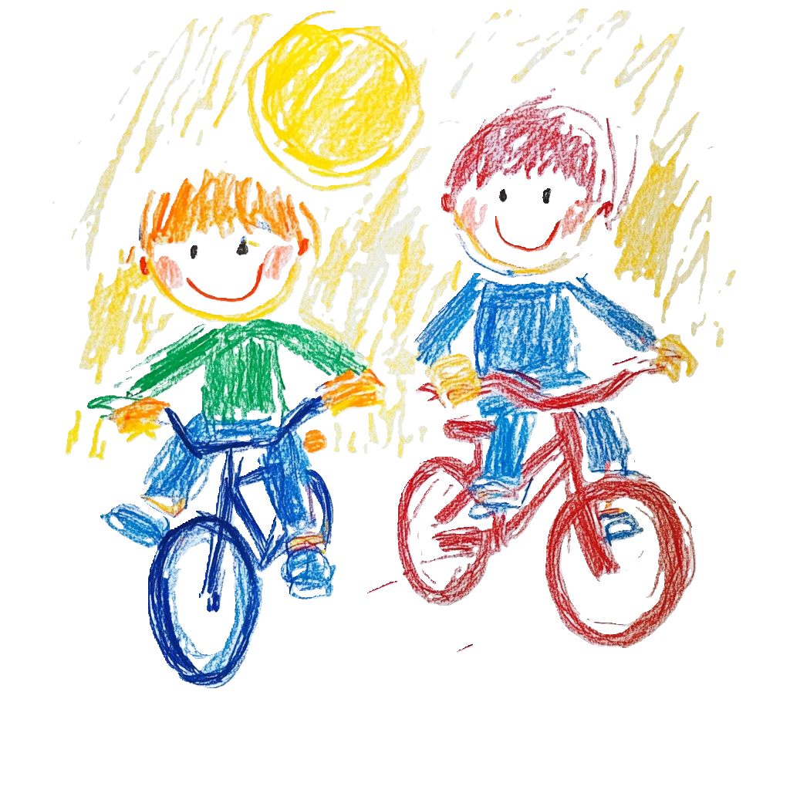

The City has a plan to make Marlee Avenue safer for everyone.
Let's make it happen.
Join your neighbours in calling for protected bike lanes and wider sidewalks for kids, seniors, and everyone in between.
Join the Campaign →Takes 30 seconds. No spam, ever.
Toronto has proposed two projects that would transform Marlee Avenue and Eglinton into safe, walkable, bikeable streets for our growing neighbourhood.
Both are stalled.
A protected, bidirectional bike lane along Marlee Avenue from Eglinton to Roselawn, making it safe to bike our neighbourhood and along to the Beltline.
⏸ Paused by Councillor ColleApproved bike lanes and pedestrian improvements along Eglinton that would link Marlee and communities across the city.
⏸ Delayed until Crosstown opensSend a quick note to Councillor Colle and Mayor Chow asking them to move these projects forward.
Your own words carry extra weight — feel free to personalize before sending.
Volunteer, pick up a lawn sign, or just say hello — email Graham at graham.pressey@gmail.com